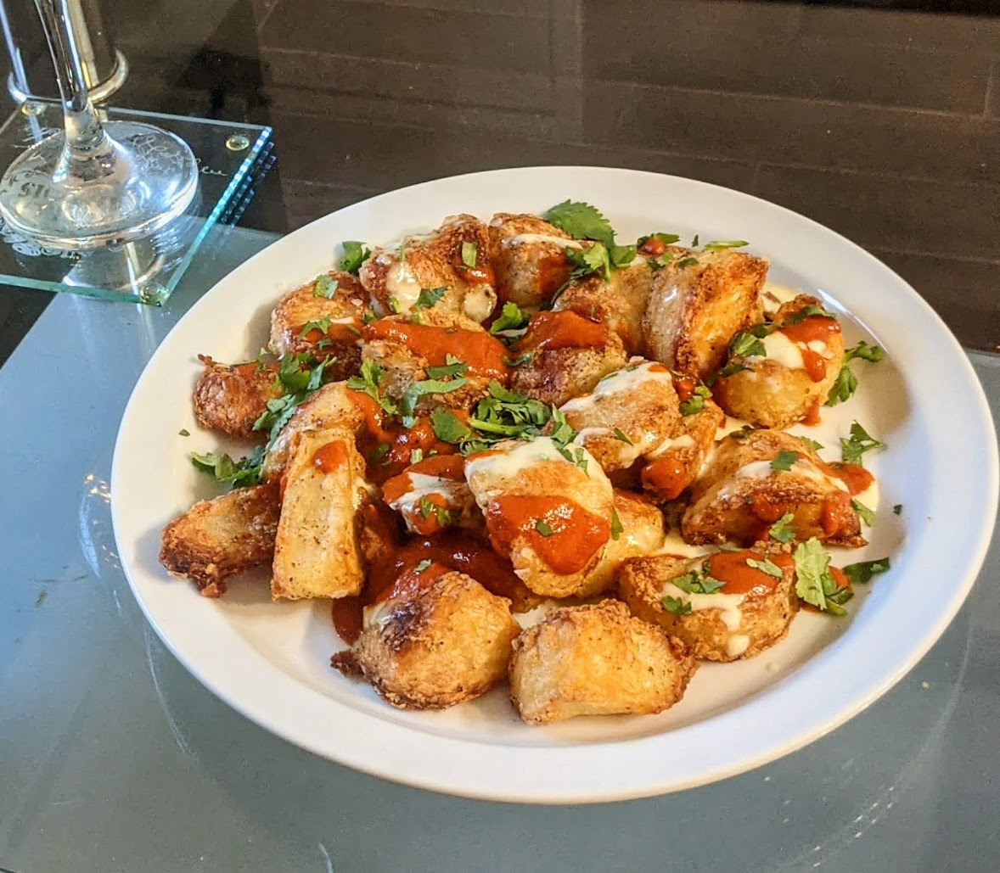

Patatas Bravas

Unique flavor with little effort!
Patatas Bravas was my favourite dish when visiting Barcelona. It's a simple dish: potatoes with a bit of aoili and Bravas sauce. But the simplicity works so well here, so I just had to learn how to make it at home. This recipe calls for some spices that may not be readily available to you or in your area, but I encourage you to switch out the spices for another and experiment with the taste and combinations!
There are 4 main parts to prepare here: The Aoili, The Bravas Sauce, and the Potatoes which is a 2 part process. Here are the ingredients you need, with optional changes or suggestions in brackets
Ingredients
Aoili
- Egg white and yolk from 1 egg
- Juice from half of a lemon
- Half a regular spoon of salt
- Minched garlic (optional if you want a slightly garlicky taste to your dish)
- Black pepper
- Olive Oil
Bravas Sauce
- 1/2 cup Water from boiling potatoes in a saucepan
- 1/4 cup of cold water in a separate bowl
- 1/4 cup of Chicken or Vegetable Broth or a quarter piece of a Boullion cube
- Spices: Pimenton Picante and Pimenton Dulce (any spicy powder of choice:paprika or cayenne for example)
- Half a regular spoon of corn starch
Potatoes
- Potatoes or Sweet Potatoes cut into ~5-7cm pieces or baby potatoes cut in half
- Salt
- Baking Soda/Powder
- Dried Thyme (optional. Can also add other dried herbs or spice mix of your choice)
- Black Pepper
- Olive Oil
Here is a list of equipment you will need
- Oven set to Bake at 450°F
- Saucepan big enough to hold the potatoes you'll be cutting
- Big bowl for mixing potatoes with seasoning
- Immersion Blender
- Baking Sheet (A deeper baking pan will do, just make sure to give the potatoes more space between each other.
- Strainer or Slotted Spoon
- Large Metal Spoon
Steps
Aoili
- In a tall mixing container, add the egg, salt, lemon juice, pepper and garlic if using it.
- Begin blending and slowly add olive oil. Keep adding until the consistency is like mayonnaise.
- Pour into a sealed container and store in the fridge for now.
Potatoes: boiling
- In a pot, add water, and a regular sized spoon of salt and baking soda. of water to a boil. There should be enough water that when you add the potatoes, the potatoes will be fully submerged.
- Once the water starts boiling, add the chunks of potatoes. Let them sit in the pot until they are soft enough to poke with a fork, but not soft enough to break apart when you do. This usually takes 10 minutes, so check around then and then every 2 minutes until it has the right softness.
- Drain most of the water and place the potatoes in a large bowl. Place the pot of water back on the stovetop and set the heat to medium for now. This is just to keep the water hot. If you accidentally drained all of the water, it is no problem! Fill the pot with half a cup of hot water from the tap and place on the stove. The water from the potatoes is starchy and helps keep the sauce from being too watery, but it is not the end of the world!
- To the bowl of potatoes, add a sprinkle of salt, black pepper, other spices and then drizzle with olive oil. There should be enough seasoning to lightly cover the potatoes but they don't need to be covered entirely with it.
- Let the potatoes sit for a bit. In the meantime, you can start the Bravas Sauce steps below and come back when instructed
- Put a bit of oil on the baking sheet, and then spread the potatoes on it. Shake the pan and use the potatoes to spread the oil around. This will prevent the potatoes from sticking to the pan. Place the pan in the oven near the top once it has reached the temperature.
- Let the potatoes bake for around 5 minutes before checking on them and giving the pan a light shake or using a metal spoon or spatula to move the potatoes around from their spot.
- Check every 2-3 minutes until the potatoes look crispy, and then remove from the oven
Bravas Sauce
While the potatoes are cooling and the pot of water is still hot on the stove, you can begin preparing the Bravas Sauce. Add the broth and spices to the pot of water and stir until everything is dissolved. If using boullions, you may need to use a fork or spoon to break it apart.
Go back to the Potatoes step 6 above, but in the time while waiting for the potatoes to bake, you can continue with the next Bravas Sauce Steps.
We are going to prepare the cornstarch and water mix. Keep in mind that if you add too much corn starch to the bowl of cold water too quickly, it will form lumps that are harder to dissolve and mix. Add small amounts of cornstarch at a time and then use a fork to mix the cornstarch until the water is free of the clumps.. Repeat until all of the cornstarch is mixed in the cold water.
While stirring the pot of heater water, slowly add the cornstarch water to the heated water. Do not add the cornstarch water too fast, or clumps will form! Repeat until the two are fully mixed and then increase the heat to high
The sauce should begin boiling. Keep an eye on it, and constantly stir and mix it around. Let it boil until it has a consistency that you like. If it is not watery enough for your liking, add a bit of water at a time while mixing until it is just right for you. I prefer mine to be very thick, but it is personal preference.
Set the heat to very low/simmer until ready to serve.
Put it all together!
- Spread the potatoes on a plate or bowl, preferably not too crowded in order to keep them crispy.
- Serve with the Aoili and Bravas Sauce. You can either pour them right on top of the potatoes, or have them on the side. I prefer to put them on top and optionally garnish them with a bit of cilantro or parsley leaves to make it look pretty.
- If you find the potatoes need more salt, you can sprinkle more after baking them, though I have found that the salt from the broth used in the sauce, from boiling the potatoes and the sprinkle added before baking should be enough.